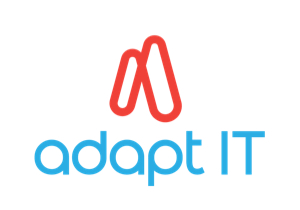
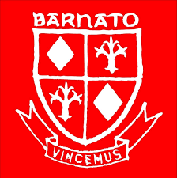

Maliviwe Diko

ABOUT
Applied Mathematics and Computer Science major currently working as a IT Graduate: Admin for Adapt IT Education division,
I am currently working on a Python Course and a Discrete Mathematics mathematics course to broaden my skills.
WORK EXPERIENCE
- AdaptIT

IT Graduate : Admin
Oct 2021 - Present | 7 months
Midrand, Gauteng, South Africa
- Barnato Park High School

Educator Assistant
Jan 2021 - Jul 2021 | 7 months
City of Johannesburg, Gauteng, South Africa
- Sci Bono Discovery Center
Mathematics Tutor
Mar 2021 - May 2021 | 3 months
City of Johannesburg, Gauteng, South Africa
- Lucid Clear Credit
Quality Assurance
Feb 2019 - Apr 2020 | 1 year 2 months
Rosebank, Gauteng, South Africa
EDUCATION
- Stadio
Post Graduate Certificate in Education
Feb 2022 - Present
City of Johannesburg, Gauteng, South Africa
- Zero to Matery | Online Udemy Course
Python, Web Dev and Data Science Courses
Nov 2022 - Present
City of Johannesburg, Gauteng, South Africa
- University of Johannesburg

BSc Mathematical Science with specialisation in Applied Mathematics and Computer Science
Feb 2016 - Nov 2020
City of Johannesburg, Gauteng, South Africa
- Hoerskool Ugie High School
High School
Jan 2011 - Dec 2016
Ugie, Eastern Cape, South Africa